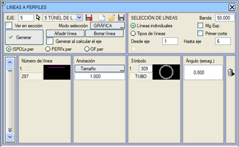

| |
|
HARİTADAN ENKESİTLERE ÇİZGİ EKLEME
|
Bir eksenin kesin enkesitleri oluşturulduktan sonra, her bir enkesite, kullanıcının belirttiği üç boyutlu bir çizgi veya çizgi grubunu kestiği noktaya bir sembol eklemek mümkündür. Bu özelliğin en yaygın kullanım alanları; mevcut veya projelendirilen boru hatlarının, kafa hendeklerinin, boyuna drenaj hatlarının vb. enkesitlerde gösterilmesidir. 
Kesişen çizginin boyutu, geometrik eksene olan mesafesi, plan eksenine olan mesafesi veya kotu gibi bilgileri etiketlemek mümkündür. Bu sayede, enkesitte bir hattın geçişi bir sembol ile işaretlenebilir ve ek olarak eksene olan mesafesi ile kotu da etiketlenebilir. Sembolü gerçek boyutunda göstermek için ölçeklenebilir semboller kullanılmalıdır (küçük, ölçeklenebilir bir daire olarak tanımlanmış olan S309 sembolü önerilir) ve sembolün boyutu Boyut faktörü ile kontrol edilmelidir. Çizgiler, tek tek veya tiplerine göre seçilebilir. Eğer tanımlama tek bir eksen için yapılmışsa, bu eksen mevcut eksen ile aynıysa ve ayrıca Çizgi Tipleri seçeneği işaretliyse, X Ekseninin .vol Dosyasına Kaydet seçeneğini etkinleştirmek mümkün olur. Eksene olan mesafeleri veya kotları etiketlemek için, enkesit çizim modülü tarafından özel bir işleme tabi tutulan S306 ve S307 sembollerinin kullanılması tavsiye edilir. Eğer başka semboller kullanılırsa, eksene olan mesafe veya kotun sayısal değeri çizim ölçeğinden etkilenecektir. Seçilen sembol tipini gösteren küçük pencereye tıklandığında, kullanıcının doğrudan seçim yapabilmesi için sembol paleti açılır. Verileri .lap uzantılı dosyalara yüklemek/kaydetmek ve verileri sıfırlamak mümkündür. Kaydetme seçeneği, yalnızca çizgilerin tek tek değil, tiplerine göre seçildiği durumlarda kullanılabilir. [Oluştur] düğmesi, belirtilen eksen grubu için ve belirli bir tarama bandı genişliği içinde arama yaparak işlemi yürütür. [ ] Eksen hesaplandığında otomatik oluştur seçeneği etkinleştirilirse, herhangi bir eksenin hesaplaması yapıldığında (tanımlanan eksen aralığında olması koşuluyla) bu işlem otomatik olarak çalışır ve semboller ISPOLn.per dosyalarına (ve eğer katılım kolu ekleme seçeneği aktifse ISPOLn_AR.per dosyalarına da) dahil edilir. Enkesitte Göster seçeneği etkinleştirilirse, dinamik enkesit penceresinde, anlık enkesitin seçilen çizgilerle olan kesişim noktaları gösterilir. Çizgilerin ISPOLx.per dosyalarına eklenmesi seçildiğinde, ayrıca [] Kam. Sınırı (Kamulaştırma Sınırı) seçeneği de etkinleştirilebilir. Bu durumda, çizgilerin aranacağı tarama bandının genişliği, kamulaştırma genişliği (arazi enkesitinin sınırları) ile limitlenir. [ ] İlk Kesişim seçeneği etkinleştirilirse, enkesitin bir çizgiyi birden fazla kez kestiği durumlarda, sembol sadece eksene en yakın olan kesişim noktası için eklenir. OF.per seçeneği aracılığıyla, Sanat Yapılarına ait enkesitleri içeren OF.per dosyasına çizgiler eklenir. |